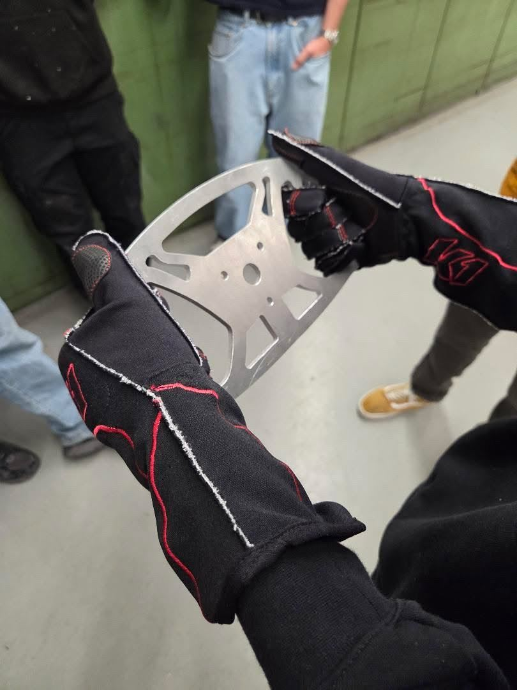
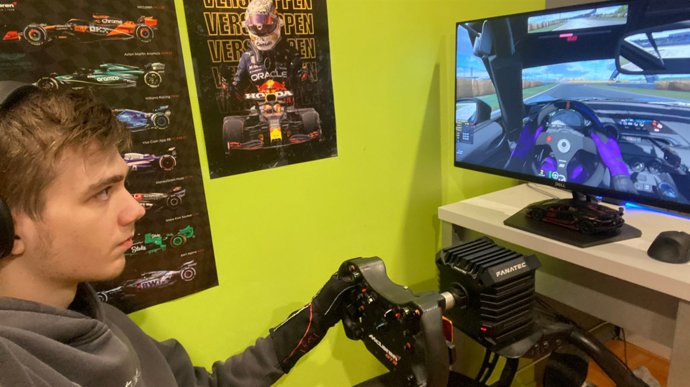
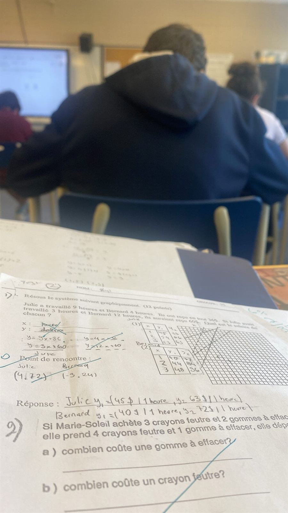
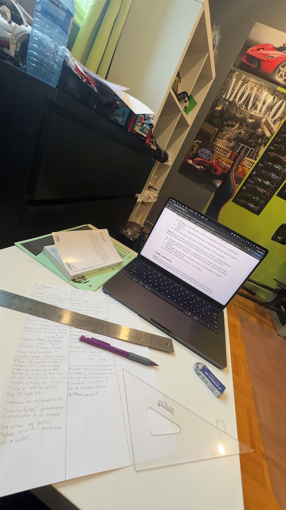
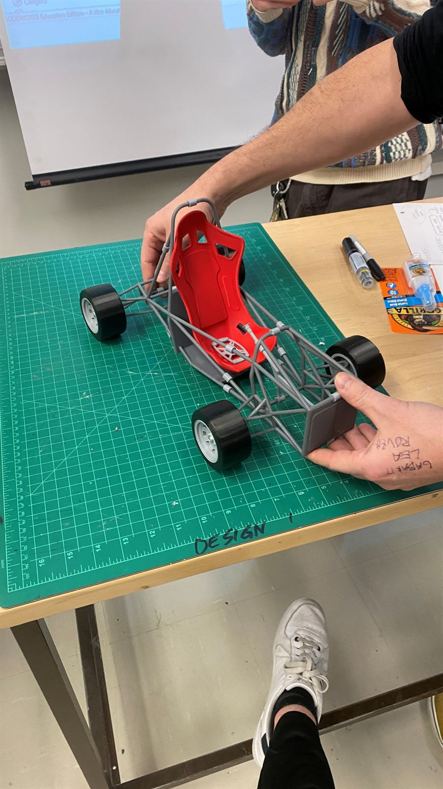
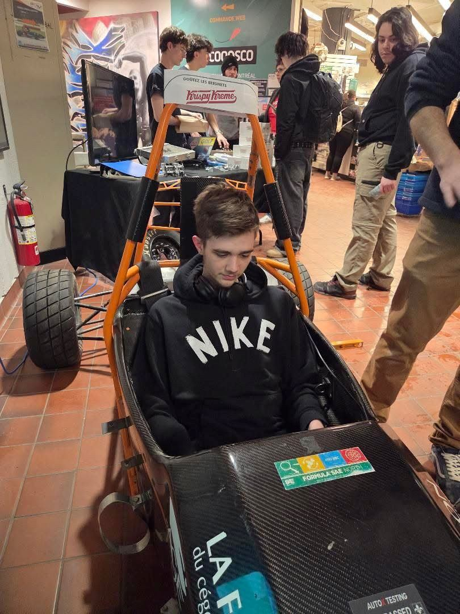
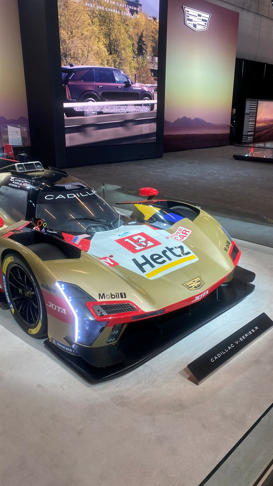
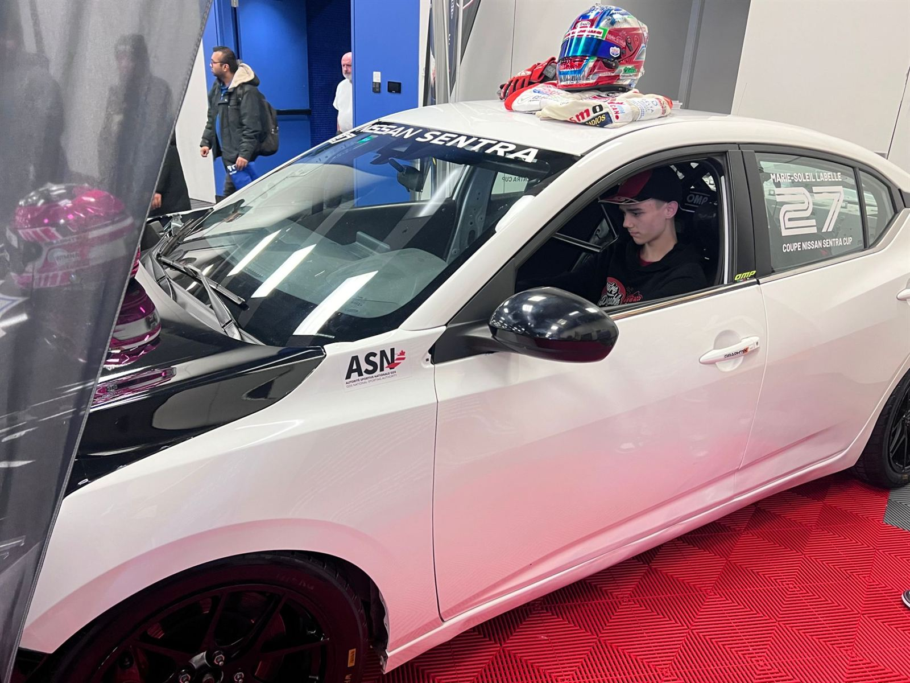
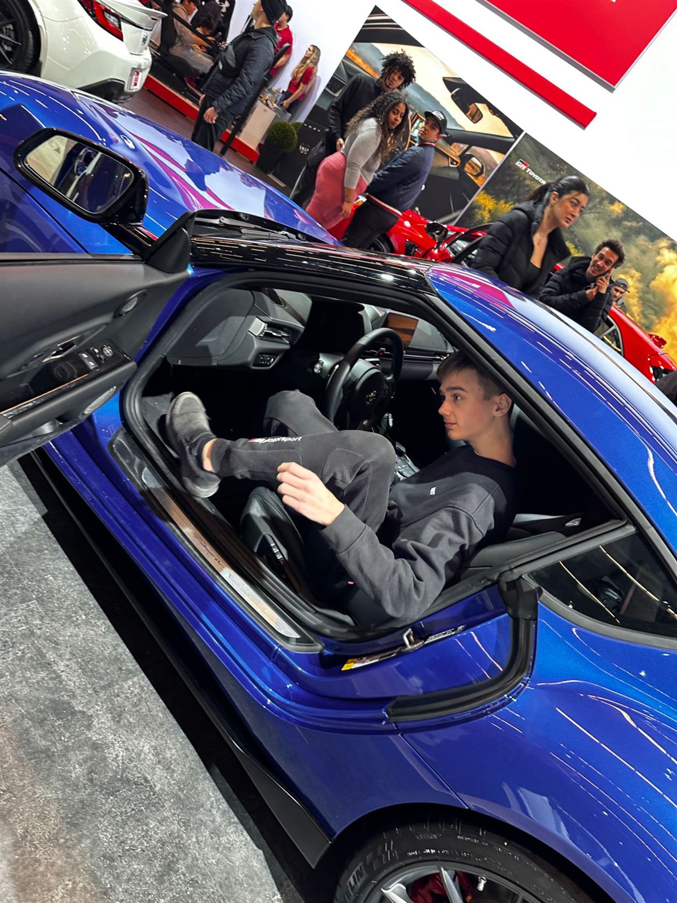

OUTSIDE THE TRACK
My name is Kiryl Valadzko. I'm a creator, a student, and someone who believes in building something meaningful through passion, creativity and perseverance.
- FaithOrthodox Christian
- FamilySuccess, shared
- CreateFilm · design · story
01 Learn, create, improve
Turning ideas
into something real.
I enjoy taking an idea and turning it into something real, whether it's a creative project, a video, or something I've designed myself.
Outside of racing, I'm driven by the desire to learn, create and improve. I'm interested in industrial design, technology, photography, filmmaking and storytelling.
I like understanding how things work, experimenting with new ideas, and constantly finding ways to do things better.

Hands onGloves on, wheel plate in hand. StudentBetween classes, still working.
StudentBetween classes, still working. Where it startedA VR headset, a wheel, and a kid hooked.
Where it startedA VR headset, a wheel, and a kid hooked.
At homeGloves on, every session.

In classSchool first, sim after.
College projectsSketches, specs and a laptop full of tabs.
The FSAE frameWhere design meets racing.
In the old FSAE carStudent-built, and a perfect fit.
02 Faith
A strong
foundation.
Faith is a fundamental part of my life. As an Orthodox Christian, I want to grow closer to God and let my beliefs shape the person I become.
Jeremiah 29:11 is a verse that resonates with me because it reminds me to trust God's plan while continuing to put in the work. I believe that success means little without character, humility and a strong foundation of values.
03 Family
Success is better
when it's shared.
Family is another important part of my life. My ambitions aren't just about personal achievements.
I want to build a future where I can give back to the people who have supported me, and help the people I love pursue their own dreams. For me, success is more meaningful when it can be shared.
 Reading listThe Bible and The Psychology of Money.
Reading listThe Bible and The Psychology of Money. Habs game nightRed seats, loud crowd.
Habs game nightRed seats, loud crowd.
WEC hypercarAuto show, eyes on the endurance cars.
04 Creativity
Real over
perfect.
I value authenticity over perfection, and would rather show the real process than pretend to have everything figured out.
Creativity has always been a way for me to express myself. Through filming, editing, design and content creation, I enjoy documenting experiences and telling stories in my own way.
I believe there is something worth sharing in the journey itself, including the challenges, the mistakes and the lessons along the way.
 In the cockpitA single-seater, finally my size.
In the cockpitA single-seater, finally my size.
Nissan Sentra Cup · #27Trying a real race car on for size.
GR SupraAuto show season.
05 Character
Keep moving
forward.

I'm naturally competitive and ambitious, but I'm also someone who values discipline, self-control and personal growth. I believe in staying true to my commitments, living sober, and working toward the person I want to become.
I don't believe that every day needs to be extraordinary. What matters is continuing to move forward, even when progress feels slow.
At the same time, I enjoy humour, exploring new ideas, and appreciating the little things outside my ambitions. Life isn't only about chasing the next milestone. It's also about faith, relationships, learning, and becoming someone I'm proud to be.
- 01DisciplineStaying true to my commitments, on and off the track.
- 02Self-controlLiving sober, and working toward the person I want to become.
- 03GrowthI don't have everything figured out, and I don't expect to. I'm still learning, growing, and discovering what I'm capable of.
Faith. Family. Creativity. Perseverance.
Ultimately, I want to build a life that reflects what I believe in. The destination matters, but so does the person I become along the way.
Now, back to the track.